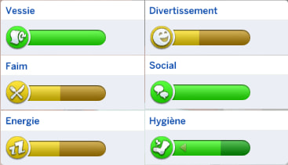
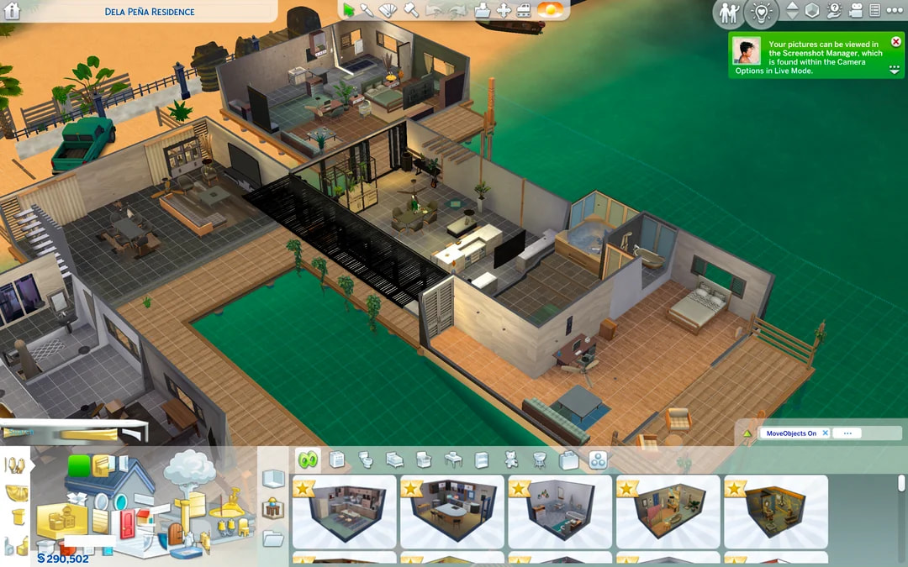

Les Sims 4 est un jeu de simulation de vie captivant où vous créez et contrôlez vos propres personnages virtuels, appelés "Sims". Dans ce monde ouvert, vous gérez tous les aspects de leur vie quotidienne : trouver un travail, construire une maison, développer des relations, fonder une famille et bien plus encore.
Une fois que vous avez installé le jeu, vous pouvez créer vos Sims, construire leur maison, les faire interagir avec d'autres personnages et explorer le monde ouvert du jeu.
Les Sims ont des besoins de base tels que la faim, la soif, le sommeil, l'hygiène, la socialisation et le divertissement. Si les besoins ne sont pas satisfaits, votre Sims sera malheureux et cela affectera son bien-être
Le jeu propose au joueur de créer une maison pour ses Sims. Vous pouvez personnaliser la maison en choisissant le style architectural, les meubles, les décorations et les couleurs. Le jeu vous permet d'exprimer votre créativité et de créer une maison à l'image de votre Sims.
Les Sims peuvent apprendre de nouvelles compétences en pratiquant des activités telles que la peinture, la cuisine, la musique, le jardinage, la programmation, etc. Plus votre Sims pratique une compétence, plus il devient compétent dans ce domaine. Les compétences peuvent être utiles pour obtenir un emploi, gagner de l'argent ou progresser dans la carrière de votre Sims.
Les Sims peuvent apprendre de nouvelles compétences en pratiquant des activités telles que la peinture, la cuisine, la musique, le jardinage, la programmation, etc. Plus votre Sims pratique une compétence, plus il devient compétent dans ce domaine. Les compétences peuvent être utiles pour obtenir un emploi, gagner de l’argent ou progresser dans la carrière de votre Sims.
Il est possible d'utiliser des codes de triche pour faciliter le jeu. Par exemple, vous pouvez obtenir de l'argent supplémentaire, augmenter les compétences de votre Sims, modifier les relations entre les personnages, etc. Les codes de triche peuvent être utiles pour accélérer la progression du jeu ou pour tester des fonctionnalités spécifiques.
Pour jouer aux Sims 4, vous devez d'abord télécharger le jeu de base (gratuit). Mais si vous souhaitez enrichir votre expérience de jeu, vous pouvez acheter des packs d'extension pour ajouter de nouvelles fonctionnalités et du contenu à votre jeu. Une fois que vous avez installé le jeu, vous pouvez créer vos Sims, construire leur maison, les faire interagir avec d'autres personnages et explorer le monde ouvert du jeu.